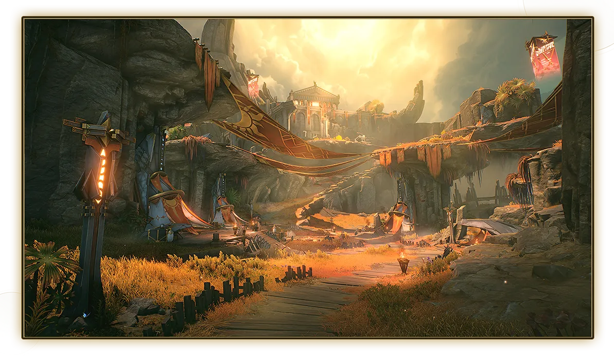

《鸣潮》官方宣布，2.6版本将于2025年8月28日正式更新，本次版本带来了全新角色、武器、区域、剧情以及多项系统优化，为玩家带来更加丰富的游戏体验。
五星导电长刃角色，可通过角色活动[不坠烜冕]抽取获得。
五星气动臂铠角色，可通过角色活动[漫于盈缺时轴]抽取获得。
五星长刃，可通过武器活动[浮声沉兵·驭冕铸雷之权]获取。
五星臂铠，可通过武器活动[浮声沉兵·万物持存的注释]获取。
包括「金穹」（长刃）、「翼锋」（迅刀）、「阳焰」（佩枪）、「凌空」（臂铠）、「曜光」（音感仪）等四星武器，可通过参与[先约电台]活动，解锁【寰宇频道】或【寰宇特约】后，开启【寰宇开拓物资箱】自选获得。
跟随【潮汐任务】第二章·第八幕「灼我以烈阳」的指引即可解锁前往。
包括「伪作的神王」、「蚀脊龙」、「海之女」。
包括「梦魇·青羽鹭」、「梦魇·紫羽鹭」、「梦魇·咕咕河豚」、「梦魇·啾啾河豚」、「梦魇·巡徊猎手」、「梦魇·惊蛰猎手」。
3件套，角色获得护盾时，自身攻击力提升6%，暴击伤害增加4%，该效果可叠加至5层，持续4秒，每0.5秒可触发一次叠加。
3件套，角色施放声骸技能时，自身重击伤害加成提升30%，持续4秒，同时队伍中其他角色的声骸技能伤害加成提升4%，该效果可叠加至4层，持续30秒，同一类型的声骸技能只能触发一次该效果，效果结束后会重置记录。
武器图鉴系统，可查看已获取武器信息与图鉴进度。
支持回放挑战过程。
在「今州」和「黑海岸」区域可使用【翱翔】进行空中探索。
新增「海之女」挑战关卡。
包括[烬与铁之狩]区域探索活动、[行旅图集·桑古伊斯狩原]限时探索度活动、[狩原逐影]留影收集活动。
星声×300、结晶溶剂×22
在2025年8月28日04:00（UTC+8）前创建角色并解锁【邮件】功能，补偿邮件有效期至下个版本更新前。
《鸣潮》2.6版本为玩家带来了丰富的新内容和游戏优化，无论是全新角色的加入，还是新区域的开放，都将为玩家带来全新的游戏体验和挑战。请各位玩家做好准备，迎接即将到来的版本更新！
潮汐守望者
2025-08-27 10:23
奥古斯塔看起来好酷！导电长刃角色终于来了，一定要抽到她！
声骸研究员
2025-08-27 09:15
新的怒涛级声骸看起来很有挑战性，特别是「海之女」，希望难度不要太高。另外合鸣套装的效果很有趣，看来要研究新的配装了。
鸣潮旅行者
2025-08-27 08:42
桑古伊斯狩原看起来是个很有特色的区域，期待探索！翱翔优化也很实用，终于可以在更多区域飞了。